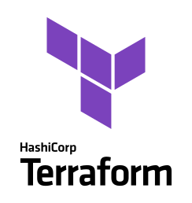
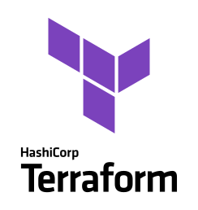

Software and Consulting
Moin und herzlich willkommen! Ich bin Marvin Kurock, ein leidenschaftlicher
IT-Consultant und Programmierer
aus der wunderschönen Hansestadt Hamburg. Seit über einem Jahrzehnt bin ich in der faszinierenden Welt der
Informationstechnologie zuhause, mit einem Fokus auf Softwareentwicklung, Cloud-Infrastruktur und
-Architektur.
Meine Reise in der IT-Branche hat mir nicht nur ein tiefes Verständnis für komplexe Technologien verschafft,
sondern auch einen echtes DevOps-Mindset geprägt, welches es ermöglicht, Entwicklung und Betrieb nahtlos
miteinander zu verbinden.
Durch meine langjährige Erfahrung habe ich gelernt, dass es nicht nur darum geht, Code zu schreiben, sondern
vielmehr darum, Probleme zu lösen und Mehrwert für meine Kunden zu schaffen. Ich bin davon überzeugt, dass
maßgeschneiderte Lösungen, die auf individuelle Bedürfnisse zugeschnitten sind, der Schlüssel zum Erfolg sind.
Mein Ziel ist es, durch innovative Technologien und fortschrittliche Ansätze Ihre Visionen zu verwirklichen.
Als Hamburger bin ich davon überzeugt, dass harte Arbeit, Zuverlässigkeit und eine pragmatische
Herangehensweise die Grundlage für solide und skalierbare Lösungen bilden.
Ich freue mich darauf, gemeinsam mit Ihnen die Möglichkeiten der Technologie zu erkunden und Lösungen zu
entwickeln, die nicht nur effizient sind, sondern auch Ihre Erwartungen übertreffen.
Technologien
Webenwicklung
Als leidenschaftlicher Webentwickler bin ich spezialisiert auf die Realisierung herausragender
Webanwendungen mit JavaScript und verschiedenen Frameworks. Meine umfassenden Fähigkeiten erstrecken sich
über Angular, React, Svelte und Vue – allesamt leistungsstarke Technologien, die ich mit Begeisterung
einsetze, um ansprechende und effiziente Webseiten zu gestalten.
Ich beherrsche auch Metaframeworks wie Next.js,
Nuxt.js und SvelteKit, die die Entwicklung noch weiter optimieren und beschleunigen. Durch meine
Kenntnisse
in diesen fortschrittlichen Technologien bin ich in der Lage, maßgeschneiderte Lösungen zu schaffen, die
den
modernen Standards für Webentwicklung entsprechen.
Profitieren Sie, wie ich durch die geschickte Anwendung von Frameworks und Metaframeworks innovative,
skalierbare und benutzerfreundliche Webanwendungen entwickle. Wenn Sie an einer Zusammenarbeit
interessiert
sind oder mehr über meine Fähigkeiten erfahren möchten, zögern Sie nicht, mich zu kontaktieren.
Mobile Entwicklung
Als erfahrener Dienstleister im Bereich Mobile App Development biete ich maßgeschneiderte Lösungen sowohl
mit React Native als auch durch native iOS Entwicklung mit Swift, SwiftUI, WidgetKit und SiriKit. In der
dynamischen Welt der mobilen Technologien ist es meine Leidenschaft, innovative und benutzerfreundliche
Anwendungen zu schaffen, die den individuellen Anforderungen meiner Kunden gerecht werden.
React Native - Effizient und plattformübergreifend
Mit React Native erstelle ich plattformübergreifende Apps, die auf iOS und Android gleichermaßen
beeindrucken. Die Verwendung von JavaScript ermöglicht nicht nur eine effiziente Entwicklung, sondern
bietet
auch kosteneffektive Lösungen ohne Abstriche bei der Performance. Mein Ziel ist es, Apps zu gestalten, die
nicht nur technisch brillant sind, sondern auch ein beeindruckendes Nutzererlebnis bieten.
Native iOS Entwicklung mit Swift, SwiftUI, WidgetKit und SiriKit
Für Kunden, die eine erstklassige iOS-Erfahrung suchen, setze ich auf die native iOS Entwicklung mit
Swift.
Dabei integriere ich fortschrittliche Technologien wie SwiftUI für moderne und deklarative
Benutzeroberflächen, WidgetKit für dynamische Home-Bildschirm-Widgets und SiriKit für die nahtlose
Integration von Sprachbefehlen und intelligenten Siri-Funktionen.
Infrastruktur
IaC Terraform Azure AWS


 
